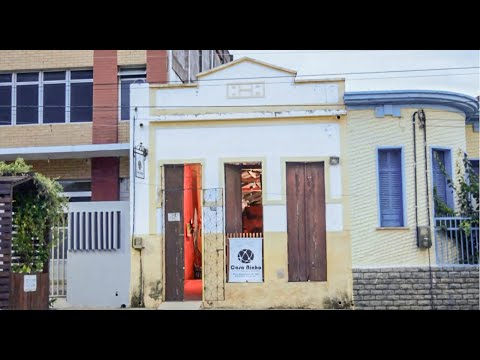

Fotos e Sua Localização


A Casa Ninho está localizado no Crato, Ceará. Para mais detalhes, veja o mapa abaixo:
O Ponto de Cultura Casa Ninho é um aparelho cultural alternativo localizado no centro do Crato, interior do Ceará. Nasceu em 2011, como sede do Grupo Ninho de Teatro, e em 2017 passou a abrigar e ser administrada também pelo Coletivo Atuantes em Cena. Desde a sua abertura, a Casa promove e recepciona cotidianamente espetáculos, oficinas, mostras de artes, exibições de filmes e documentários, lançamentos de livros, reuniões, ensaios e eventos culturais diversos, configurando-se como um dos principais equipamentos de difusão e fruição cultural da região, apoiando artistas e grupos locais e de todas as regiões do país.Em 2020, a Casa Ninho recebeu da Secretaria de Cultura do Estado do Ceará a certificação de Ponto de Cultura, pela sua contribuição no acesso, proteção e promoção dos direitos, da cidadania e da diversidade cultural no Estado.
A Casa Ninho está localizado no Crato, Ceará. Para mais detalhes, veja o mapa abaixo: